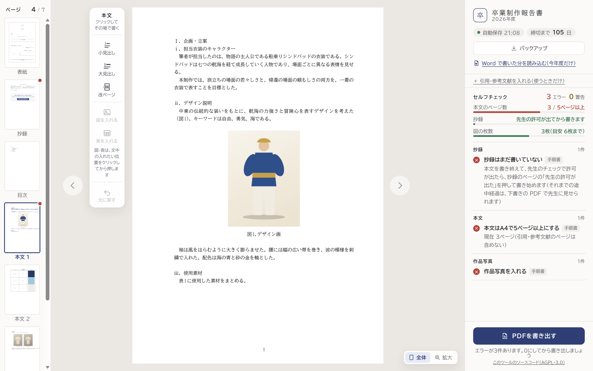
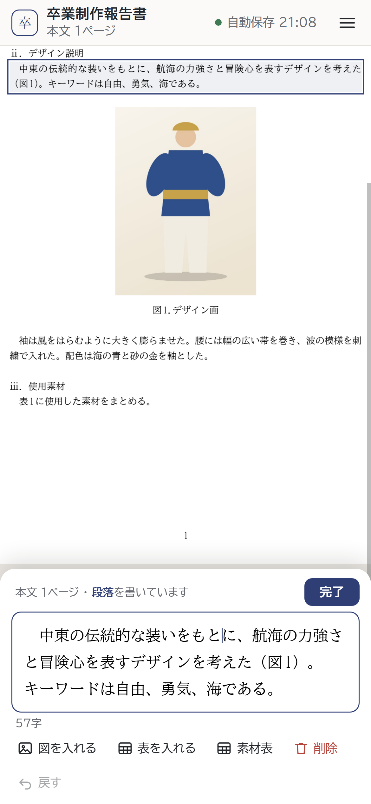
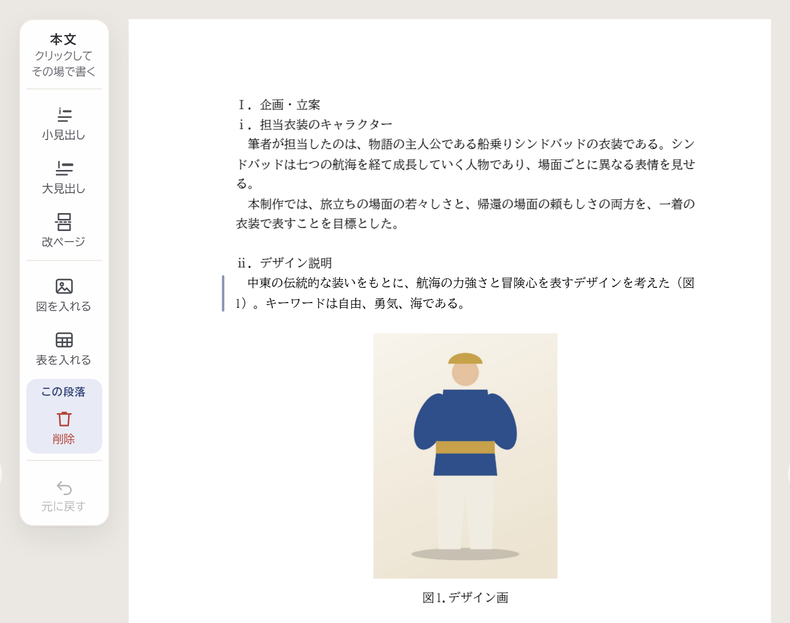
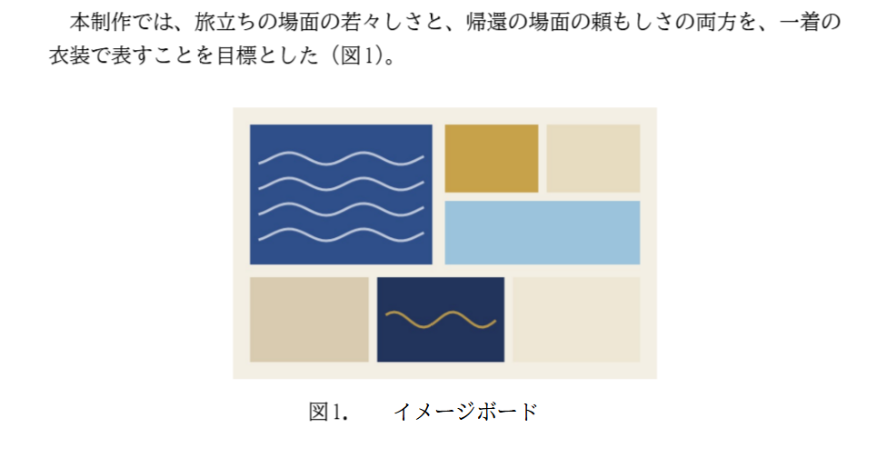
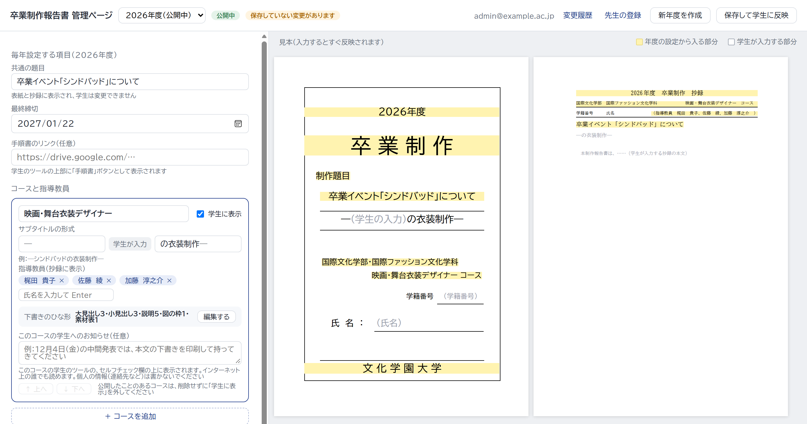
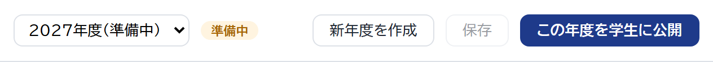

卒業制作報告書 作成ツール
学生用FOR STUDENTS2026
表紙から作品写真まで、決まった形のまま1か所で書けるツールです。手順書のルールに合っているかをその場で確かめ（セルフチェック）、そのまま1つの PDF にして提出できます。


CHAPTER 03 ─ WRITE
紙面の上で、そのまま書きます。字の大きさ・行の間・見出しの番号は、ツールが手順書どおりにそろえます。

123456段落をタップすると、下に「書く欄」が開きます。図・表はそのボタンで、見出しは「追加」から。
紙面の段落をクリックすると、その場に書く欄が開きます。書き終えたら Esc キーか、紙面の外をクリック。
段落を分けるところで Enter。「。」を忘れても自動で付きます。段落の頭で Backspace を押すと、前の段落とつながります。
図を指したい文中の位置をクリックしてから押し、写真を選びます。
図と同じく、入れたい位置をクリックしてから押します。
「小見出し」（ⅰ．）・「大見出し」（Ⅰ．）は、書いている段落の後ろに入ります。番号は自動です。
間違えたら「元に戻す」（Ctrl＋Z）。直前の操作を取り消せます。

AB卒業制作報告書 作成ツール
教員用FOR FACULTY2026
学生はこのツールで報告書を書き、セルフチェックを受けて、1つの PDF にして提出します。先生は「管理ページ」で、その年度の題目・コース・指導教員・締切と、コースごとのひな形・お知らせを決めます。

CHAPTER 03 ─ SETTINGS
年度の設定は、管理者の先生が管理ページで行います。入力すると、すぐ右の見本（表紙と抄録）に出ます。
「公開中」は学生が使っている年度。「準備中」は、まだ学生に見えません。
表紙と抄録に入ります。学生は変えられません。
学生のツールの「締切まで○日」に使われます。
「―」＋学生の入力＋「の衣装制作―」の形。「学生に表示」を外すと選べなくなります。
氏名を入力して Enter。× で外します。抄録に出ます。
黄色は、年度の設定から入る部分です。
公開中の年度は、1分ほどで学生のツールに反映されます。
